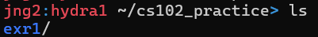
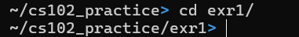
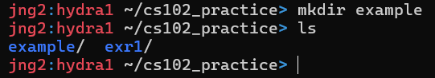
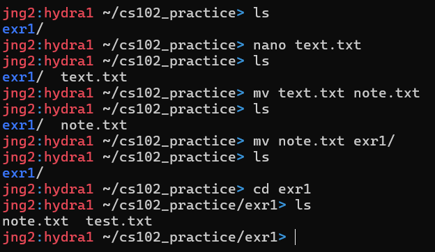
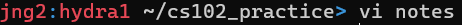
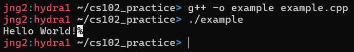

Terminal is an application/program that can be used to issue commands to the computer. Runs a shell.
| Command | Use | Example |
|---|---|---|
| ls | List files in the current directory |  |
| cd | Moves to a different directory |  |
| mkdir | Makes a directory |  |
| rm | Removes a file or directory. To remove a directory, add "-r" before the folder name. Does not give warnings. | |
| mv | Moves a file or a directory or renames them |  |
| ssh | Connects to other machines | ssh username@hydra0.eecs.utk.edu |
| nano | Text Editor | |
| vi/vim | Another text editor. To exit, press esc then type ":q"(exits without saving). Press enter after. |  |
| g++ | C++ Compiler. Makes an executable from C++ course code files. |  |
The layer that transfers the command from the keyboard to the actual OS.